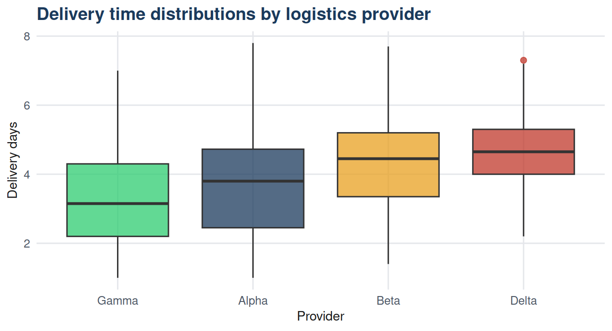

| Groups (k) | Pairwise comparisons | P(at least 1 Type I error) at alpha = 0.05 |
|---|---|---|
| 2 | 1 | 0.050 |
| 3 | 3 | 0.143 |
| 4 | 6 | 0.265 |
| 5 | 10 | 0.401 |
| 6 | 15 | 0.537 |
24 Chapter 24: One-Way ANOVA
24.1 Learning objectives
By the end of this chapter, the student should be able to:
- Explain why multiple t-tests inflate the Type I error rate.
- State the hypotheses for a one-way ANOVA.
- Interpret an ANOVA table including F statistic and p-value.
- Conduct post-hoc comparisons using Tukey’s HSD.
- State the assumptions of one-way ANOVA and assess them.
24.2 Introduction
When three or more groups are compared, running separate t-tests for each pair inflates the probability of at least one false positive. With four groups and six pairwise comparisons, each at \(\alpha = 0.05\), the probability of at least one Type I error is approximately \(1 - (1-0.05)^6 \approx 0.26\). Analysis of variance (ANOVA) avoids this by testing all groups simultaneously.
The dataset contains delivery time records for 200 parcels distributed equally across four logistics providers. The question is whether mean delivery time differs across providers.
24.3 Why multiple t-tests are inappropriate
ANOVA maintains the family-wise error rate at \(\alpha\) by testing all group differences in a single test.
24.4 One-way ANOVA hypotheses
\[H_0: \mu_1 = \mu_2 = \mu_3 = \mu_4\] \[H_1: \text{at least one group mean differs}\]
ANOVA tests whether the variation between group means is larger than expected from sampling variability alone. It does this by partitioning total variation into two components: variation between groups and variation within groups.
24.5 Descriptive summary
Code
library(dplyr)
provider_summary <- df |>
group_by(provider) |>
summarise(
n = n(),
mean = round(mean(delivery_days), 2),
sd = round(sd(delivery_days), 2),
min = round(min(delivery_days), 1),
max = round(max(delivery_days), 1)
) |>
arrange(mean)
knitr::kable(provider_summary,
col.names = c("Provider","n","Mean days","SD","Min","Max"),
caption = "Table 24.2: Delivery days by provider") |>
kableExtra::kable_styling(bootstrap_options = c("striped","hover"),
full_width = FALSE)| Provider | n | Mean days | SD | Min | Max |
|---|---|---|---|---|---|
| Gamma | 50 | 3.25 | 1.53 | 1.0 | 7.0 |
| Alpha | 50 | 3.73 | 1.59 | 1.0 | 7.8 |
| Beta | 50 | 4.41 | 1.43 | 1.4 | 7.7 |
| Delta | 50 | 4.64 | 1.04 | 2.2 | 7.3 |

24.6 Conducting one-way ANOVA
Code
anova_model <- aov(delivery_days ~ provider, data = df)
anova_table <- summary(anova_model)[[1]]
anova_output <- data.frame(
Source = c("Between groups (provider)", "Within groups (residual)", "Total"),
SS = round(c(anova_table$`Sum Sq`[1],
anova_table$`Sum Sq`[2],
sum(anova_table$`Sum Sq`)), 3),
df = c(anova_table$Df[1], anova_table$Df[2],
sum(anova_table$Df)),
MS = round(c(anova_table$`Mean Sq`[1],
anova_table$`Mean Sq`[2], NA), 3),
F = round(c(anova_table$`F value`[1], NA, NA), 3),
p = round(c(anova_table$`Pr(>F)`[1], NA, NA), 4)
)
knitr::kable(anova_output,
col.names = c("Source","SS","df","MS","F","p"),
caption = "Table 24.3: ANOVA table for delivery time by provider",
na = "") |>
kableExtra::kable_styling(bootstrap_options = c("striped","hover"),
full_width = FALSE)| Source | SS | df | MS | F | p |
|---|---|---|---|---|---|
| Between groups (provider) | 60.805 | 3 | 20.268 | 10.16 | 0 |
| Within groups (residual) | 390.996 | 196 | 1.995 | NA | NA |
| Total | 451.802 | 199 | NA | NA | NA |
Interpreting the ANOVA table. The F statistic is the ratio of the between-group mean square to the within-group mean square. A large F indicates that variation between group means exceeds what would be expected from sampling variation alone. The p-value tests whether this F is significant at the chosen \(\alpha\).
24.7 Effect size: eta-squared
\[\eta^2 = \frac{SS_{\text{between}}}{SS_{\text{total}}}\]
Code
ss_between <- anova_table$`Sum Sq`[1]
ss_total <- sum(anova_table$`Sum Sq`)
eta_sq <- ss_between / ss_total
cat("Eta-squared =", round(eta_sq, 3), "\n")Eta-squared = 0.135 Code
cat("Interpretation: provider explains",
round(eta_sq * 100, 1),
"% of variance in delivery time\n")Interpretation: provider explains 13.5 % of variance in delivery time24.8 Post-hoc comparisons: Tukey’s HSD
A significant ANOVA tells us that not all means are equal - but not which pairs differ. Tukey’s Honest Significant Difference (HSD) test compares all pairs while controlling the family-wise error rate.
Code
tukey <- TukeyHSD(anova_model)
tukey_df <- as.data.frame(tukey$provider)
tukey_df$Comparison <- rownames(tukey_df)
tukey_df <- tukey_df |>
select(Comparison, diff, lwr, upr, `p adj`) |>
mutate(across(where(is.numeric), round, 3),
Significant = ifelse(`p adj` <= 0.05, "Yes", "No"))
knitr::kable(tukey_df,
col.names = c("Comparison","Difference","Lower 95%",
"Upper 95%","Adjusted p","Significant"),
caption = "Table 24.4: Tukey HSD post-hoc comparisons") |>
kableExtra::kable_styling(bootstrap_options = c("striped","hover"),
full_width = FALSE)| Comparison | Difference | Lower 95% | Upper 95% | Adjusted p | Significant | |
|---|---|---|---|---|---|---|
| Beta-Alpha | Beta-Alpha | 0.684 | -0.048 | 1.416 | 0.076 | No |
| Delta-Alpha | Delta-Alpha | 0.910 | 0.178 | 1.642 | 0.008 | Yes |
| Gamma-Alpha | Gamma-Alpha | -0.480 | -1.212 | 0.252 | 0.327 | No |
| Delta-Beta | Delta-Beta | 0.226 | -0.506 | 0.958 | 0.854 | No |
| Gamma-Beta | Gamma-Beta | -1.164 | -1.896 | -0.432 | 0.000 | Yes |
| Gamma-Delta | Gamma-Delta | -1.390 | -2.122 | -0.658 | 0.000 | Yes |
24.9 Assumptions of one-way ANOVA
| Assumption | Description | How to check |
|---|---|---|
| Independence | Observations within and between groups are independent. | Ensured by study design (random assignment or random sampling). |
| Normality | Residuals are approximately normally distributed. | Q-Q plot or Shapiro-Wilk test on residuals. ANOVA is robust to mild departures with large n. |
| Homogeneity of variance | Population variances are equal across groups (homoscedasticity). | Levene's test or Bartlett's test. Welch's ANOVA is an alternative when violated. |
24.10 Summary
One-way ANOVA tests whether at least one group mean differs from the others, using a single F test to maintain the Type I error rate. The F statistic is the ratio of between-group to within-group variance. A significant result requires post-hoc tests (such as Tukey’s HSD) to identify which pairs differ. Effect size is reported as eta-squared.
24.11 Key terms
| Term | Definition |
|---|---|
| ANOVA | Analysis of variance; a method for simultaneously comparing means of three or more groups. |
| F statistic | The ratio of between-group mean square to within-group mean square. |
| Eta-squared | Effect size for ANOVA: proportion of total variance explained by group membership. |
| Post-hoc test | A follow-up test identifying which specific pairs differ after a significant ANOVA. |
| Tukey's HSD | A post-hoc method controlling the family-wise error rate across all pairwise comparisons. |
| Family-wise error rate | The probability of at least one Type I error across a set of simultaneous hypothesis tests. |
24.12 Exercises
Using Table 24.3, state the ANOVA conclusion at \(\alpha = 0.05\) in plain language. What does this tell you - and what does it not tell you - about provider performance?
Using Table 24.4, which provider pairs are significantly different? Which provider has the fastest and slowest mean delivery?
A manager suggests running all six pairwise t-tests instead of ANOVA. Using Table 24.1, explain the risk of this approach if \(\alpha = 0.05\) per test.
Eta-squared is 0.135. Interpret this value. Does provider choice explain most of the variation in delivery time?
If the Levene test indicated unequal variances, what alternative to standard ANOVA would you use, and why?